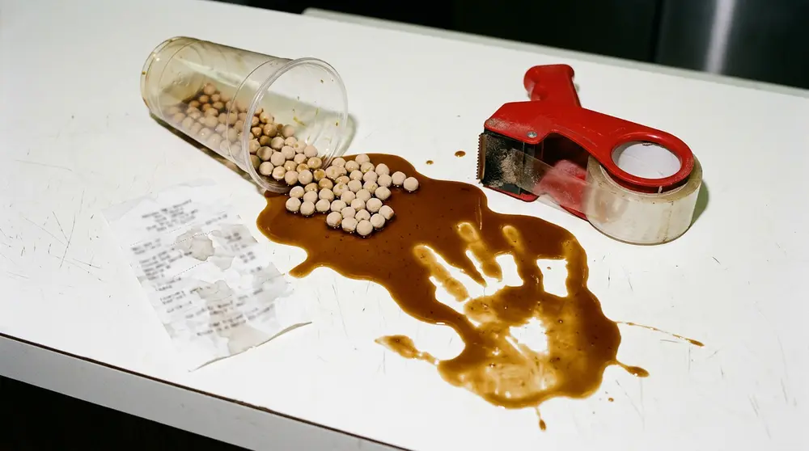

Articles / Business & sourcing
10 Costly Boba Shop Mistakes
2026-05-07 · Boba Business, Sourcing, New Shop Owner, Taiwanese Suppliers, Bubble Tea Ingredients

Most new boba shops that close within their first 18 months do not fail because customers dislike bubble tea. They fail because the operator underestimated ingredient behavior, supplier terms, or unit economics — three areas where an experienced Taiwanese supplier can save a new owner five- to six-figure amounts of wasted inventory and rework. This article walks through the ten mistakes we see most often at Yenchuan's sampling desk, and the specific supplier-side conversations that prevent each one.
The patterns below are drawn from our 2024–2025 sampling logs across 380+ new-shop inquiries from the US, Canada, Australia, the UK, Southeast Asia, and the Middle East. Currency figures are in USD unless noted.
1. Choosing Pearls by Price Alone
New owners often compare tapioca pearls on wholesale cost per kilogram and pick the cheapest tier. The real cost of a low-grade pearl shows up later: uneven cook times, a 6–9% higher batch-reject rate, and a shorter four-hour service window before texture collapses. A mid-tier Taiwan-origin pearl typically costs 15–25% more per kilogram but yields 8–12% more servings after rejects, which inverts the math.
A Taiwanese supplier should send a cooking-curve reference with each pearl SKU — starch ratio, recommended boil time, rest time, and sugar-syrup holding temperature. If that document is not offered, the supplier is selling a commodity, not a pearl program.
2. Treating "Brown Sugar Syrup" as One Product
Brown sugar syrup is a category, not a spec. Brix can range from 60° to 78°, color from amber to near-black, and the ratio of muscovado to refined brown sugar changes the aftertaste. A shop that switches brown sugar suppliers without matching Brix will quietly change the sweetness of every drink on its menu.
Before placing a second order, request a Brix reading on the bottle, a certificate of analysis (COA), and a sample from the exact production lot the shop will receive. Yenchuan sends a lot-matched 200 ml sample on brown sugar orders above 50 kg at no charge.
3. Skipping the Non-Dairy Creamer Conversation
Non-dairy creamer is the single biggest driver of milk-tea mouthfeel — more than the tea itself, for most chain-style recipes. New owners often buy whatever the supplier sends first and then chase flavor issues through tea leaf changes, which rarely fix the problem.
Ask the supplier for at least three creamer options with different fat-to-protein ratios (commonly 30/2, 32/3, and 35/3 percent) and blind-taste them in your actual milk tea recipe. The correct creamer can reduce your tea-leaf cost by 15–20% because a richer base allows lighter tea dosing.
4. Ordering Before the Recipe Is Locked
Many first orders are placed before the shop has finalized its menu recipes. The result is a container of ingredients that almost fits — the matcha is the wrong grade for lattes, the fruit syrup is too concentrated for fruit tea, the pearls are sized for 16 oz cups in a 22 oz cup program.
Run at least two weeks of internal recipe testing on supplier samples before committing to a full shipment. A credible supplier will gate the sample kit behind a refundable deposit rather than a hard sale.
5. Not Asking About MOQ Flexibility
Published MOQs are negotiable for verified operators. A 500 kg headline MOQ on a custom syrup often becomes 150–200 kg for an opening order with a signed letter of intent for follow-on volume. New owners who accept the website MOQ tie up two to three times the working capital they need in month one.
Ask explicitly: "What is the minimum first order for a new shop with documented store opening plans?" and "Can the balance be booked as a scheduled follow-on within 90 days?"
6. Ignoring Shelf Life and Import Math
A 12-month shelf life on tapioca pearls sounds comfortable until you subtract 45 days of ocean freight, 10–14 days of customs, and 30 days of in-market distribution. The shop effectively receives product with 8–9 months of usable shelf life, not 12. Brown sugar syrup behaves worse — typical unopened shelf life is 9 months, leaving under 6 months once landed.
Ask the supplier for the production date on every lot, not just the expiry date. Batch traceability is standard for any Taiwanese manufacturer holding FSSC 22000 or ISO 22000 certification.
| Ingredient | Typical unopened shelf life | Realistic usable window after ocean freight to US/EU |
|---|---|---|
| Dry tapioca pearls | 12–18 months | 8–14 months |
| Brown sugar syrup | 9 months | 5–7 months |
| Non-dairy creamer powder | 18 months | 14–16 months |
| Fruit syrup concentrate | 12 months | 8–10 months |
| Matcha powder (bulk) | 12 months refrigerated | 6–8 months unrefrigerated in transit |
7. Assuming Taiwan Origin Means Taiwan-Made
Several large brands route products through Taiwanese offices while manufacturing in Southeast Asia. This is not inherently bad — some Vietnamese and Thai facilities hold equivalent certifications — but the operator should know what they are buying. A "Taiwan supplier" with a Vietnam production code on the COA is selling a logistics service, not Taiwanese manufacturing.
Request the manufacturer's GMP certificate and the production facility address. Taiwan-made product will list a TFDA registration number and a Taiwanese factory code.
8. Underestimating Waste in Peak Hours
The difference between a 25% and 40% gross margin often comes down to pearl and syrup waste at rush. Cooked pearls over four hours old are usually discarded, but many new shops cook full batches once per shift and then dump the final 30% before close.
The fix is operational, not an ingredient problem, but a supplier can help by offering a quick-cook pearl SKU (8–12 minute boil) that allows smaller, more frequent batches. Ask whether the supplier carries a service-paced pearl alongside their standard pearl.
9. Missing the Private-Label Moment
Private-label syrups and flavor bases often become available at lower volumes than owners assume. In 2025, Yenchuan opened private-label brown sugar syrup at 300 kg per SKU, which is within reach for a two-store operator in month six. Owners who defer this conversation to "after we have five stores" usually discover their competitors locked in the same factory first.
Start the private-label discussion at the sampling stage. Even if the first purchase is stock SKU, the supplier can reserve formulation time on their R&D calendar.
10. Treating the Supplier as a Vendor, Not a Partner
The biggest mistake is transactional. A supplier who only hears from the shop at reorder time cannot help with menu drift, seasonal launches, or a sudden matcha shortage. The operators who run the tightest margins share monthly sell-through data, menu changes, and complaint patterns with their primary supplier. That information lets the supplier pre-position inventory, flag upcoming price moves, and suggest ingredient swaps before the shop notices a problem.
Taiwanese suppliers — Yenchuan included — are structured around long-term operator relationships. The first six months of that relationship determines whether the shop is quoted partner pricing in year two or standard pricing forever.
How Yenchuan Works With New Shops
We run a four-step onboarding that maps to the mistakes above:
| Step | Timeline | What the shop gets |
|---|---|---|
| Sampling kit | Week 1 | 6–8 SKUs matched to the shop's planned menu, with cooking curves and COAs |
| Recipe lock | Weeks 2–3 | Two rounds of feedback with our R&D team, adjusted to local water and cup sizes |
| Opening order | Week 4 | Flexible first MOQ, lot-matched samples, production-date disclosure |
| Quarterly review | Ongoing | Sell-through-aware reorder planning, private-label calendar |
Ready to skip the five-figure learning curve? Contact Yenchuan to book a sampling conversation with our sourcing team. We will ask about your planned menu, cup size, and opening date, and send a sample kit sized to your actual program rather than a generic box.
Sources
- International Food Information Council — 2024 Food & Health Survey
- Euromonitor International — Specialty Tea & Coffee Shops: World Market Overview 2025
- Taiwan FDA — Food Safety Management Regulations, 2024 edition
- IFT (Institute of Food Technologists) — Journal of Food Science, Vol. 89 No. 4
- FSSC 22000 Foundation — Scheme Version 6 Requirements
About the Author
This article was prepared by the Yen Chuan sourcing and R&D team, drawing on 2024–2025 sampling logs and on-the-ground visits to partner shops in Taipei, Los Angeles, Vancouver, Sydney, and London. Yen Chuan (Yenchuan) has supplied bubble tea ingredients from Taiwan since the early growth years of the category.
Frequently Asked Questions
Q: What MOQ should a new boba shop expect from a Taiwanese supplier? A: Published MOQs are usually 300–500 kg per SKU for custom work and 100–200 kg for stock SKUs, but verified new shops with documented opening plans can often negotiate first orders at 150–200 kg. Ask for a follow-on purchase commitment in exchange for lower first MOQ.
Q: How long do unopened tapioca pearls actually last after ocean freight? A: Headline shelf life is 12–18 months, but after 45 days of ocean freight, 10–14 days of customs, and 30 days of distribution, a US or EU shop realistically receives product with 8–14 months of usable life. Always request the production date, not just the expiry date.
Q: Is Taiwanese-branded product always manufactured in Taiwan? A: No. Some Taiwan-branded suppliers produce in Vietnam or Thailand. Ask for the GMP certificate, the factory address, and the TFDA registration number to confirm Taiwanese manufacturing.
Q: When can a small shop start private-label syrups? A: Many Taiwanese factories, including Yenchuan, now open private-label syrup at roughly 300 kg per SKU, which is feasible for a two-store operator at month six. Start the formulation conversation during sampling, not after store five.
Q: What is the single biggest driver of milk tea mouthfeel? A: Non-dairy creamer, not the tea leaf, for most chain-style recipes. Blind-taste at least three creamer options with different fat-to-protein ratios (commonly 30/2, 32/3, 35/3 percent) in your actual recipe before locking a creamer SKU.